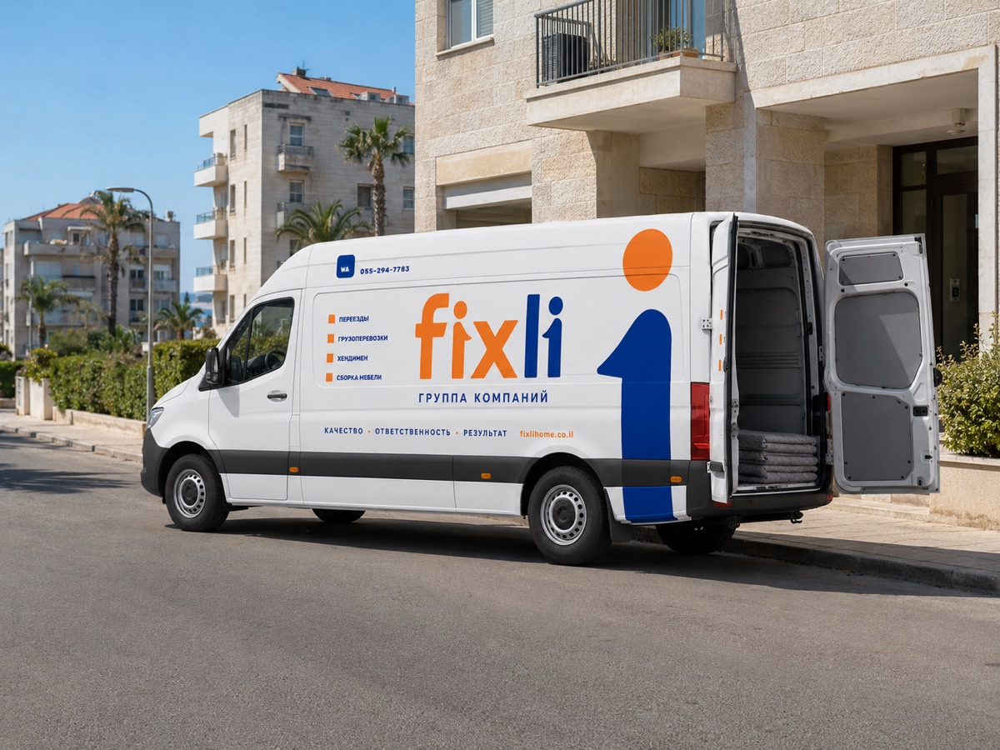
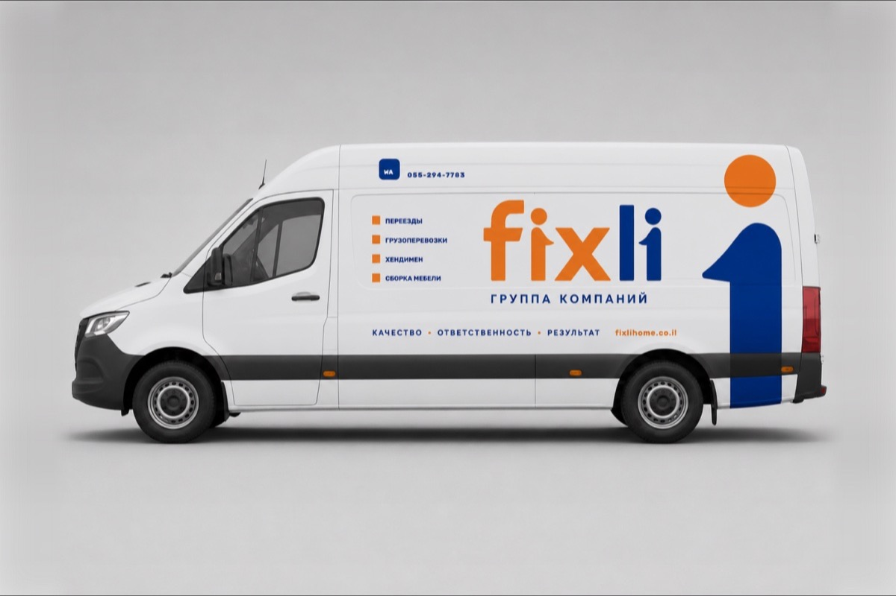
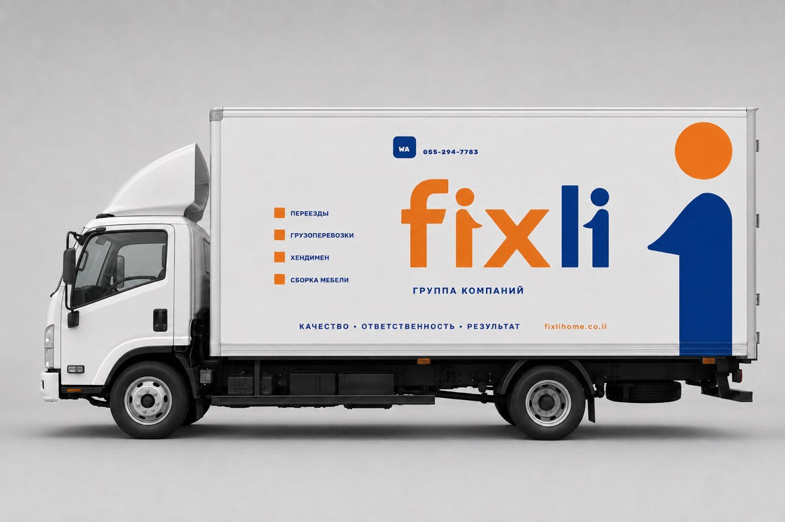
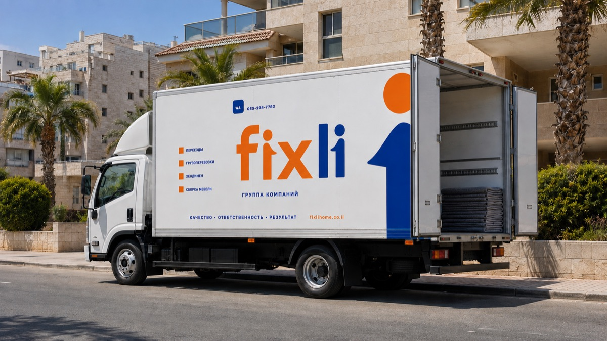

Переезды, сервис и решения для дома под одним брендом
Действующий прибыльный бизнес: около трёх лет непрерывной работы,
собственный бренд и цифровая платформа. Материал для обсуждения финансирования роста.
~3 годанепрерывной работы под брендом «Перевозки по Нетании»
30–50заказов в месяц: около 30 вне сезона, около 50 летом
60–100 тыс. ₪месячная выручка: вне сезона и в сезон
Это не стартап с презентацией вместо бизнеса. Компания возит,
собирает и чинит каждый день — финансирование масштабирует то, что уже приносит деньги.
Около 3 лет непрерывной работы
Бизнес работал под брендом «Перевозки по Нетании» и продолжает под брендом Fixli.
Юридическая база — действующий зарегистрированный бизнес с НДС.
Глубокое понимание процессов и проблем рынка
Основатели прошли все роли внутри заказа — от продажи и просчёта до подъёма
мебели на этаж. Отсюда знание, где рынок теряет клиента и на чём он экономит
качеством.
Операционная инфраструктура в собственности
Mercedes Sprinter, профессиональный инструмент, 5 постоянно задействованных человек
и проверенный резерв сотрудников.
Экосистема услуг вокруг переезда
Перевозки, упаковка, доставка мебели, хендимен, покраска и уборка — под единым
брендом и одним процессом продаж. Один клиент — несколько продаж.
Собственные вложения и активы, уже работающие в бизнесе
SprinterMercedes в собственности
30 тыс. ₪профессиональный инструмент
60 тыс. ₪реклама Facebook за 3 года
10 тыс. ₪бренд, логотип и айдентика
60 тыс. ₪свободные собственные средства

Визуализация рабочего дня: машина у подъезда, в кузове упаковочные одеяла
Показатели
Фактические показатели
Бизнес сезонный: лето даёт пик переездов. Переключите — числа
ниже покажут оба режима работы.
60 тыс. ₪месячная выручка
~30заказов в месяц
~2 000 ₪средний чек — выводится из фактической выручки и числа заказов
до ~50%операционный остаток до налогов, амортизации и крупного ремонта*
* Показатель основан на активном участии владельцев бизнеса в выполнении заказов.
60 рекомендацийв Facebook — 100 % положительных
653 комментарияпод публикациями компании
Клиенты возвращаютсявысокая доля повторных заказов и рекомендаций
Бренд
Бренд построен целиком — и уже ездит по городу
Знак, транспорт, форма бригады, печатные документы и реклама —
одна система, зафиксированная в брендбуке. В нише, где конкурируют объявлениями,
это редкий актив.
В знаке — суть бизнеса. Две фигуры идут навстречу друг другу: оранжевая —
работник, синяя — клиент. Буква x между ними — знак умножения:
работник × клиент.
Слоган компании: «Много задач. Одна команда.»
Фирменный транспорт: раскладка оклейки борта — знак, услуги, контактыЕдиная форма бригады — клиент видит команду, а не случайных грузчиков
Парк в айдентике
Одна раскладка на все машины: знак, четыре услуги, контакты
и фирменная фигура у кормового угла. Композиция привязана к корме, поэтому
переносится на кузов любой длины без нового макета.

Визуализация: Sprinter — машина, которая работает сегодня, в утверждённой раскладке

Макет: следующая машина парка — та же раскладка на длинном кузове
Реклама в фирменном стиле — готовый кит из 30 макетов
Листайте вбок — здесь пять макетов из тридцати
Упаковка — настоящее фото с объектаХендимен — работа из реального заказаОффер переезда — цена до выездаСторис — онлайн-расчётЛента — упаковка крупным планом
IT-инфраструктура, которой нет у локальных конкурентов
Сайт на двух языках, онлайн-расчёт цены, собственная CRM
и автоответы в мессенджерах — полный контур от рекламы до отчёта «какой канал окупился».
Всё уже построено и работает.
Сайт — fixlihome.co.il
Два языка: русский и иврит, включая RTL-вёрстку
Фирменный анимационный ролик на первом экране
Скорость и качество: Lighthouse 99–100 из 100
Страница-знакомство для клиентов из рекламы
На главной ролик играет прямо в кадре. Соседние два экрана можно открыть живьём —
нажмите, и страница загрузится здесь же, с боевого сайта.
Главная: ролик запускается сам, услуги и расчёт ·
открыть сайт
Страница-знакомство: доказательства и отзывы ·
в новой вкладке
Калькулятор: клиент видит цену до первого контакта
Он живой и работает прямо здесь —
это боевой сайт, а не макет. Отметьте вещи по комнатам и увидите вилку цены,
часы работы и состав бригады.
Живой калькулятор — считает настоящими ценами компании. Внутри рамки он листается до расчёта цены, дальше идёт презентация
Цена до первого контактаНа рынке центра Израиля так не делает почти никто:
обычно цену называют по телефону или на месте.
Модель на реальных заказахОткалибрована на 40 просчётах компании;
вилка ±12 %, а где данных мало — честно говорит «посчитает менеджер».
Расчёт уезжает в заявкуМенеджер видит состав, часы и цену — не переспрашивает
то, что клиент уже ввёл.
Тот же расчёт в Telegram-ботеОдин движок на три канала: две страницы сайта
и бот не могут показать за один заказ разные цены.
CRM: путь заказа от обращения до отчёта
Собственная система управления:
каждое обращение фиксируется с источником, наряд уходит бригаде в Telegram, а в конце месяца
видно, какая реклама окупилась — до шекеля. Нажимайте шаги — справа настоящие экраны системы.
1
Ни одно обращение не теряется
WhatsApp
Приветствие отвечает каждому новому клиенту сразу и ведёт на страницу-знакомство
Messenger
Автоответ людям с рекламы Facebook — раньше эти обращения ждали днями
Telegram-бот
Проводит опрос и показывает клиенту ту же цену, что калькулятор сайта
Уведомления
Заявка с сайта доходит до менеджера в Telegram за полминуты
Резюме
Почему это сработает
Не стартап, а работающий бизнес
Денежный поток 60–100 тыс. ₪ в месяц уже есть. Команда собрана, клиенты
рекомендуют, сезонность известна по трём годам работы.
Инфраструктура роста уже построена
Бренд, сайт, калькулятор, CRM и автоответы готовы и оплачены. Финансирование
не тратится на «подготовку» — только на то, что напрямую растит выручку.
Деньги идут в узкое место
Ограничитель сегодня — один автомобиль и одна бригада. Второй автомобиль
и вторая бригада удваивают пропускную способность при готовом потоке заказов.
Финансирование
Запрос на финансирование и контролируемый план роста
Сначала транспорт и команда, затем масштабирование рекламы —
так снижается операционный риск.
200 000 ₪запрос на 60 месяцев
60 000 ₪собственный вклад
5–7 тыс. ₪комфортный платёж в месяц
Структура финансирования: общий бюджет проекта — 260 000 ₪
Кредит — 200 тыс. ₪ (77%)Свои — 60 тыс. ₪
Кредит — 200 тыс. ₪ (77%)Свои — 60 тыс. ₪ (23%)
План использования бюджета
Наведите на полосу или выберите статью — увидите её долю.
Расширение автопарка и приобретение транспорта70 тыс. ₪
Брендирование и оснащение автомобилей20 тыс. ₪
Сайт и цифровая инфраструктура продаж8 тыс. ₪
AI, CRM и автоматизация процессов40 тыс. ₪
Стартовый рекламный бюджет25 тыс. ₪
Оборотные средства и резерв ликвидности97 тыс. ₪
Распределение между первоначальным взносом по лизингу и покупкой сервисного
микроавтобуса уточняется после одобрения и выбора автомобиля.
План роста и источник возврата
60–100 тыс. ₪Сейчас
Действующий бизнес с одним автомобилем
30–50 заказов в месяц; работающая перевозочная и сервисная команда.
цель 200 тыс. ₪6–9 месяцев
Два автомобиля и две перевозочные бригады
Хендимен, покраска и уборка — как дополнительные продажи тем же клиентам.
от 150 тыс. ₪Уровень прибыльности
Покрытие лизинга, зарплат, страховок и рекламы
По действующей операционной модели бизнеса.
300–400 тыс. ₪Сезонный потенциал
Дополнительная загрузка в летние месяцы
Не используется как база для расчёта возврата — только запас прочности.
Модель загрузки большого грузовика: 2–3 дня доставки премиальной
мебели + 2–3 дня перевозок еженедельно.
Текущая кредитная дисциплина: остаток около 25 тыс. ₪,
платёж около 1,2 тыс. ₪ в месяц, без просрочек.
Стратегия
Стратегия развития группы
Пошаговый план основателей. Порядок жёсткий и в нём весь смысл:
капиталоёмкие шаги не опережают спрос, а инфраструктура появляется только под
доказанный поток.
01Сначала
Усилить то, что уже работает
02Затем
Превратить опыт в систему
03И только потом
Масштабировать инфраструктуру
Пять направлений роста
Fixli — не каталог мастеров, а сервис ответственности: переданная
задача остаётся нашей до готового результата. Нажмите сектор.
01 / 05
Главный вход
Moving
Переезд даёт максимальное доверие и открывает
путь ко всем остальным услугам.
Переезды, доставки, сложные монтажи — от базовой перевозки до
Complete Move.
Работает сегодня
Экономика экосистемы. Одна клиентская база → кросс-продажи → выше LTV →
ниже стоимость повторной продажи → сильнее удержание. Клиент остаётся внутри Fixli,
потому что уже знает стандарт и не хочет снова искать неизвестного исполнителя.
Как растём: шесть этапов
Выберите этап — раскроется, что именно в нём происходит.
Сегодня
Начинаем не с нуля
Текущая задача — развить существующий двигатель, а не доказывать, что рынок
существует. Спрос, социальное доказательство и практическое знание уже есть.
Работающая реклама
Даёт в среднем около двух рабочих дней загрузки в неделю на машину.
Накопленная база
Обращения и клиенты за годы работы личного бренда — под реактивацию.
Точное количество даёт очистка базы, она в этапе 2.
Доверие в публичном доступе
Страница, отзывы, комментарии и рекомендации — история реальной работы.
Физическая база
Один цельнометаллический фургон, профессиональный инструмент и команда.
На нём обкатывается технология и сервис.
Передача доверия
Личная ответственность основателя переносится на бренд: переходный пост,
сегментация базы, новые отзывы уже от имени Fixli.
Узкий участок
Маркетинг ещё не переведён на новый бренд и новую цену — новые креативы,
точная аудитория, последовательная продажа отличий.
Ближайшие месяцы
Два двигателя: премиальный B2B и собственный спрос
Один поток финансирует и обучает систему, второй развивает уже работающий
собственный спрос. B2B даёт устойчивость и школу; B2C — будущую маржу,
бренд и независимость.
Двигатель A — премиальная мебель
Доставка и монтаж дорогой итальянской мебели для мебельных компаний.
Первые сложные доставки основатели проходят сами, чтобы задать технологию.
Почему это сильный канал
Клиент уже выбрал качество и подтвердил его своим кошельком. Fixli
показывается вживую в его доме, а не рекламным обещанием.
После работы остаётся вход
Клиент узнаёт про Moving, Handyman, Cleaning, Painting и Solutions.
Следующая продажа идёт уже на доверии.
Двигатель B — собственный спрос
Новый бренд, новые креативы, аудитории среднего-высокого сегмента,
более высокая цена, ретаргетинг и реактивация базы.
Каналы шире одного
Не зависеть только от Meta: профильные агрегаторы, собственный сайт,
SEO и контент. Каждый канал меряется отдельно.
Мощность растёт последней
Бюджет расширяется только вместе с людьми, машинами, стандартами
и контролем качества.
Параллельно
Компания повторяет уровень без ручного контроля основателей
Технология фиксируется в стандарт и обучение, обращения принимает цифровой
контур, а на одной клиентской базе запускаются сервисные департаменты.
Fixli Bible
Упаковка, защита, перенос, сборка, инструменты, вход в дом, завершение
работы и критические ошибки. Документ живой: новый кейс меняет стандарт.
Обучение в приложении
Инструкция доступна прямо на объекте. Задача — не нанять грузчика,
а вырастить человека Fixli.
Second Brain
Память компании: решения, кейсы, совещания и связи между ними. Знать,
почему решение принято, и видеть, что произошло после.
AI-CRM — уже строится
Единый контур заявок, живая карточка клиента, автоответы и наряды
бригаде работают на боевой. Разделы «Платформа» и «Цепочка» выше — про неё.
Сервисные департаменты
Moving, Cleaning, Handyman и Painting — максимально автономные,
но продающиеся одной клиентской базе.
Complete Move
Вершина линейки: семья отдаёт ключи и возвращается в готовый к жизни дом.
Разбор ниже.
Первое лето
Войти в сезон с доказанной машиной
Смысл девяти месяцев — прийти к сезону управляемым, а не просто быстро
вырасти. Тогда сезонный скачок спроса становится рычагом, а не угрозой
операционной модели.
Рабочая реклама, очищенная база, доказанные цены и сформированная клиентура.
Команда
Обученные люди, лидеры, инструкции и воспроизводимая технология.
B2B
Контракты дают базовую загрузку и доступ к премиальной аудитории.
Экосистема
Четыре департамента работают параллельно на одной базе.
Digital
Сайт, контент, аналитика, AI-инструменты и память компании.
Программа-максимум
Крупногабаритная доставка как почта
Отдельная гипотеза, ради которой может возникнуть логистическая
инфраструктура. На вторичном рынке выгодная крупная вещь перестаёт быть
выгодной: она далеко, а отдельный рейс стоит дороже самой покупки.
Консолидированный поток
Магистральная машина возит множество разных заказов между хабами,
локальные делают забор и последнюю милю.
Четыре формата доставки
Склад → склад (самая низкая цена), дом → склад, склад → дом
и дом → дом полным сервисом.
Хранение
Те же площадки работают как storage: Fixli забирает вещи из дома,
хранит и возвращает — клиенту не нужно везти груз самому.
От аренды к собственности
Стартовать можно на арендованных площадях. Свои терминалы — только
после подтверждённого потока и понятной экономики.
Дальний эффект
Дешёвая понятная доставка сама расширяет вторичный рынок: вещь за
150 км становится экономически доступной.
Максимальная гипотеза
Расчёт и оформление доставки внутри самой сделки на торговых
площадках — вплоть до кнопки «купить с доставкой».
Дальний горизонт
Fixli Solutions — не направление, а способ мышления
Клиент приносит желание или проблему и не обязан знать форму решения.
Fixli выясняет результат, собирает специалистов, управляет процессом и
отвечает за итог.
Как это работает
Запрос → проектирование решения → производство и монтаж →
ответственность. Клиент общается не с пятью исполнителями, а с Fixli.
Почему масштабируемо
Компетенция не в том, чтобы держать в штате всех специалистов мира,
а в том, чтобы понять задачу, собрать команду и отвечать перед клиентом.
Интерьер и производство
TV-зоны и декоративные покрытия, комплекс «стена + мебель + монтаж»,
гардеробные, премиальная мебель.
Ремонт и отделка
Огромная фрагментированная отрасль с низким сервисом — есть куда
перенести стандарты ответственности и прозрачной коммуникации.
Дальние ветки
Модульные дома, туристические объекты и собственные проекты —
появляются только после того, как сервисная система доказала управляемость.
Принцип запуска
Новое производство появляется только после повторяемого спроса
и проверенной маржи.
Чем возим: парк растёт за подтверждённой загрузкой
Машины добавляются по мере доказанной загрузки, а не наоборот.
Переключите — увидите конфигурацию каждого шага.

Макет: так выглядит следующий шаг парка на объекте
Девять месяцев: сентябрь → лето
Сентябрь — ноябрь
Получение большой машины, первые мебельные партнёры, сохранение работающей
рекламы, запуск новых креативов, реактивация базы, ручная обкатка сложных
работ и первые стандарты.
Октябрь — январь
Команда, Fixli Bible, сайт, контент, запуск Second Brain, накопление кейсов,
очистка базы и измерение экономики.
Декабрь — март
Cleaning, Handyman и Painting, рост парка вслед за спросом, передача части
работ обученным людям, контроль качества и кросс-продажи.
Март — май
Доведение рекламы, цены, продаж, загрузки и стандартов. Подготовка людей,
автомобилей и процессов к летнему сезону.
Лето — это увеличение рекламного бюджета на уже проверенную
систему, а не проверка системы под нагрузкой сезона.
Complete Move: чем верхний продукт отличается от перевозки
База
Fixli Moving
Перевозка, защита мебели, правильная команда, стандартная разборка и сборка,
понятный план. Уже этот продукт выглядит иначе, чем «машина и руки».
Модули
Move+
Упаковка вещей в коробки, уборка старой квартиры, покраска, установка
телевизоров, полок и мебели в новом доме. Клиент выбирает нужные модули.
Верхний продукт
Complete Move
Семья передаёт ключи и уезжает. Через несколько дней возвращается в новый дом:
кровати собраны, вещи разложены, телевизор висит, старая квартира готова к сдаче.
Куда масштабируемся: семь хабов вдоль населённого коридора
Нагария / Маалотсеверная точка коридора
Хайфа / Крайотсевер, порт и агломерация
Хадерастык севера и центра
Нетаниябаза компании сегодня
Ришон / Холонцентр вместо Тель-Авива: проще логистика и недвижимость
Иерусалимотдельный крупный узел
Беэр-Шеваюжная точка коридора
Эйлатне хаб, а удалённая маршрутная точка — честно обещать 30–40 км для каждой точки страны семь хабов не позволяют
Схема относительного расположения, а не карта. Точные
площадки, частота и порядок магистрали выбираются после логистического пилота.
Зачем сеть. Одна магистральная машина везёт консолидированные заказы
между хабами, локальные делают забор и последнюю милю. За счёт объединения
дальняя доставка становится дешевле отдельного рейса — и это же превращает
хранение в полноценную инфраструктуру.
Этапы 4 и 5 не входят в расчёт возврата финансирования: план
возврата в разделе выше стоит целиком на действующей операционной модели.
Здесь они показаны, чтобы был виден потолок конструкции, а не чтобы обещать его срок.